← 返回阅读库 · 原论文目录
论文讲解阅读文档 · 表征学习 · v165
Humble Teachers Teach Better Students for Semi-Supervised Object Detection
视频时长 00:12:43；讲解文字 6,153 字符；提取讲解画面 26 张。按视频原顺序阅读，每段文字保留时间戳。
文字来自整段视频的自动语音转写，按自然停顿分段，并与 PPT / 论文页面 / 演示画面对齐。未将讲解压缩为摘要；术语、数字和口述公式请结合画面及原论文核对。 阅读稿已校正规范部分明确术语误识别；原始逐字稿和每处修改记录另行保留。
讲解画面为源视频截图（640×360），不是可编辑 PPT 文件。全片按每秒 2 帧扫描内容变化，逐步展开页保留；连续动画保留代表画面。清晰度受源视频限制。
下载完整资料包 · 含离线 HTML、PDF、Word、全部 PPT 画面和字幕。
原论文与材料
Humble Teachers Teach Better Students for Semi-Supervised Object Detection · 下载完整 PDF（13 页）
按时间阅读
00:00:00–00:00:28 · 画面 001
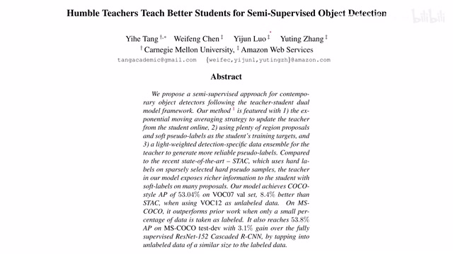
00:00:00–00:00:28 · 画面 001大家好,今天我们来介绍 Humble Teachers Teach Better Students for Semi-Supervised Object Detection 这篇论文。你从题目中看到有 Teacher Students 那说明它可能跟知识蒸馏有关系，至少说它有两个网络同时，这是一个 Semi-Supervised，也就是说它有一部分的样本是有标记的，另一部分样本是无标记的样本，最后这是用来解决 Object Detection 的问题。那么我们就来看这篇文章有什么特别之处。
00:00:28–00:00:51 · 画面 002
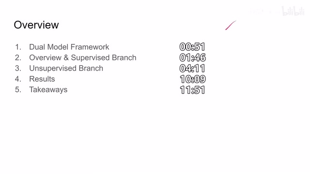
00:00:28–00:00:51 · 画面 002首先呢，我们既然已经知道了它是有这个 student network 和这个 teacher network，那么它呢就形成了一个双模型的这么一个结构。那么随后呢，我们就要关注这个模型中呢它的各个分支，一个呢是有监督的分支，另一个呢是没有监督的分支。那么随后呢是作者汇报了一些结果以及我们能从这篇论文中学到一些什么东西。那么首先呢我们来到这个论文的整体的结构 teacher student dual model framework。
00:00:51–00:00:57 · 画面 003
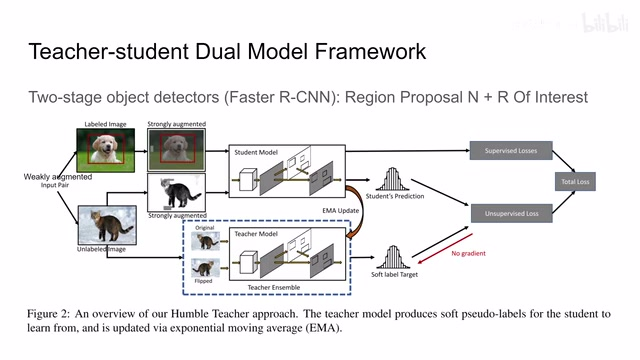
00:00:51–00:00:57 · 画面 003那在这个下面这个示意图中最中心呢你可以看到有一个 student model 有一个这个 teacher model 这两个 model 的结构是一样的都是使用了这个两步的这个 object detectors 那这里呢作者使用是 Faster R-CNN 相当有年头的一个方法了那么快速回顾一下为什么 Faster R-CNN 是一个两步的方法呢那因为它包含两个步骤嘛
00:00:57–00:00:58 · 画面 004
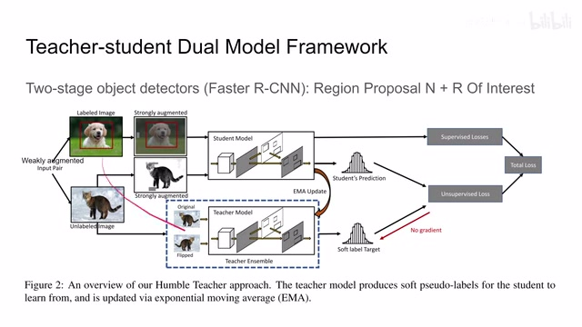
00:00:57–00:00:58 · 画面 00400:00:58–00:01:47 · 画面 005
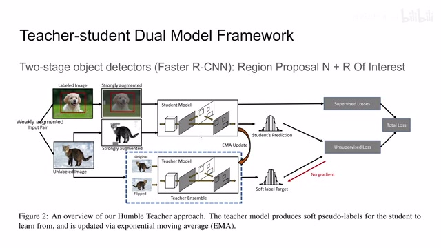
00:00:58–00:01:47 · 画面 005首先第一个呢是这个 region proposal network 它呢是帮助我们在这个 feature map 中选出一些我们可能感兴趣的 objects 我们叫它 proposals 那么然后呢再经过我们的这个 ROI 然后呢再经过我们这个 ROI 也就是这个 region of interest 它把这个 proposal 和这个 feature 结合起来来判断这个 object 这个 proposal 到底是个什么东西然后呢我们就来详细的拆解一下这个整个大的 framework 里面有哪些值得我们注意的地方
那么首先呢我们先看到整个算法的全局，同时再介绍一下相对简单的部分，也就是这个 supervised branch 有监督的这个训练的方法。对于全局的这个网络来说呢，因为它是半监督的，所以整个网络的 loss 呢它包含有监督的 loss ls 还有这个没有监督的 loss lu。那么这里呢 beta 是一个常数选到了 0.5nu 和 ns 呢表示没有标记的这个样本的数量和有标记的样本的数量。
00:01:47–00:03:47 · 画面 006
00:01:47–00:03:47 · 画面 006那么很直接的这么一个公式那么先看有监督的 loss 那这里呢因为我们是做 object detection 嘛我们既要检测到的物体它的类别是准确的同时呢检测到的物体这个 bounding box 它也要准确的所以呢我们就会有这个 classification loss 和 localization loss 那么同时呢我们第一步的 proposal 要准确后端的 ROI 呢要准确那么这两个 loss 呢也都要安排进来那么这样子呢我们有两个 domain 每个 domain 呢有两个 loss 那么就是一共四种 loss 列在这里这个呢就是有监督的这部分 loss 那么无论你使用哪种记忆学习方法 data augmentation 这个数据的增强它是必不可少的这里呢作者设计了两种增强的方法第一种呢是这个程度较弱的增强它呢就包括这个随机的翻转这个图像然后改变图像的大小等等
那么在图像进行了弱的增强之后呢，得到了这样的这个图像，那么作者呢还进行了一个 strongly 的也就是强一点的增强。这里注意呢这个 strong augmentation 呢它的输入呢是我们的弱增强的输出，也就是说我先做一个弱的 data augmentation 然后再做一个强的，而且这个所谓的强的数据增强呢包括随机的这个颜色更改。
这个清晰度还有这个对比度加一些高斯噪声啊还有随机的切掉图像中的一块等等等等但是呢这里要特别注意的是我们在强的增强中呢它没有任何的旋转包括平移等等这个特性其实非常重要的我们后面马上就介绍为什么我们要有这样一个约束那么最后呢我们再介绍一下实际使用的时候这个推理阶段的时候我们最终训练好这个网络我们呢使用的是这个 teacher model 同时呢取消了任何数据增强就是直接一个图像扔到我们 teacher model 里面就可以那么以上呢就是这篇论中关于数据增强还有监督学习的这一部分的介绍那目前看下来还是中规中矩但是马上我们看到这些 unsupervised 的方法之后呢爱博圈朋友的 DNA 就要动了那么现在呢我们就来介绍这个 unsupervised 的方法
00:03:47–00:04:12 · 画面 007
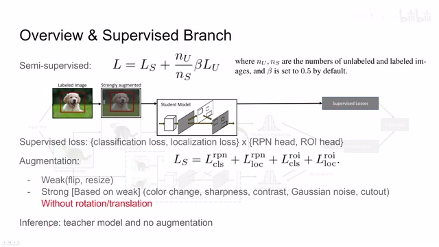
00:03:47–00:04:12 · 画面 00700:04:12–00:04:16 · 画面 008
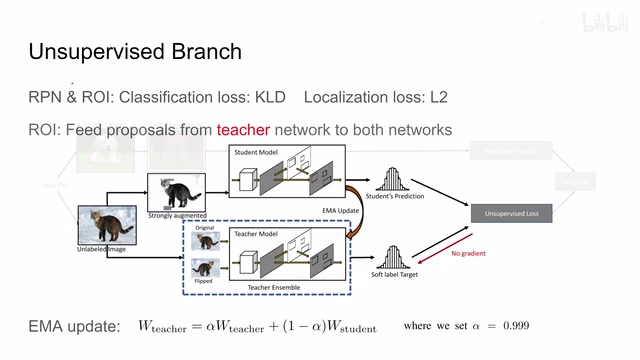
00:04:12–00:04:16 · 画面 008这里是整个 unsupervised 方法的一个大概的结构流程那么我们看到一张没有标记的图像它首先会经过一个弱的数据增强这里在图中没有体现但是你知道它这里进行了随机的翻转或者说是改变图像的大小那么在进行了弱的图像增强之后它会直接送到一个 teacher ensemble 里面这里的 ensemble 我们可以先忽视它我们认为这是一个 teacher model
00:04:16–00:04:17 · 画面 009
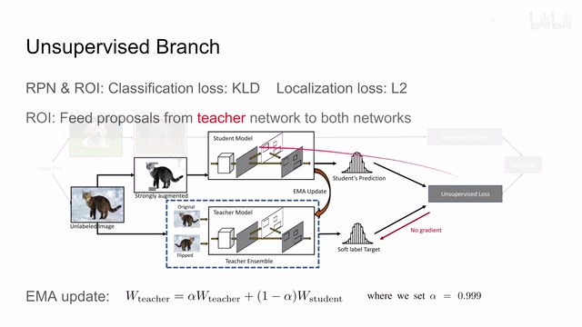
00:04:16–00:04:17 · 画面 00900:04:17–00:05:08 · 画面 010
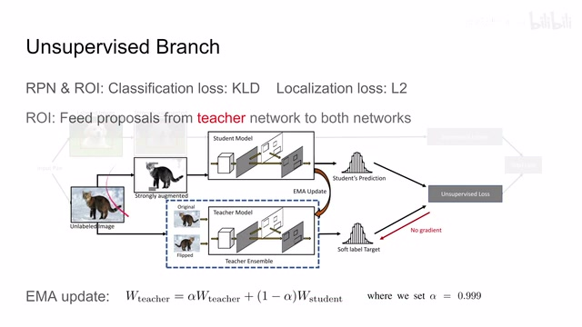
00:04:17–00:05:08 · 画面 010那么另一部分的图像呢它是经过一个更强的增强然后呢送到我们这个 student model 里面那么现在呢这两个 model 呢都有了各自自己的判断那么既然是 teacher network 它肯定是训练好了有更好的这个预测的结果所以呢我们要让学生的预测结果呢尽量的向 teacher 的这个预测结果靠拢那么这里呢跟我们其他的 self-supervised 方法一样那么在这个过程上呢我们就可以构建出一个 unsupervised loss
00:05:08–00:05:09 · 画面 011
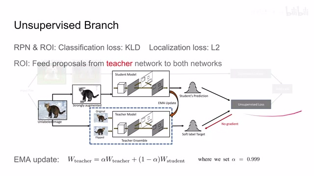
00:05:08–00:05:09 · 画面 01100:05:09–00:07:09 · 画面 012
00:05:09–00:07:09 · 画面 012那么回顾我们之前说的它呢都是给我们提供 bounding box 同时告诉我们 bounding box 里面是什么那么显然呢就有一个 classification loss 还有这个 localization loss 那么对于 localization loss 呢它既然就是空间尺度上的一个距离嘛我直接用 L2 distance 就可以了但是呢对于 classification loss 呢我们这里用的是 KL divergence 也就是我们所谓的 soft label target
而不是使用了这个 cross entropy 让我们的 teacher 给我们一个确定的答案然后呢让我们这个 student 就去学固定的一个答案那么作者的后面的实验呢也证明说这种 soft label 呢效果是更好的当然这个呢也是一种标准的操作了我们在其他论文中呢也有见到过类似的操作那么这个时候呢有敏感的朋友已经注意到了那你说你这两个网络你这个两个 loss 呢都做对比没问题但是呢有一个问题是这个 student 这个 RPN 和这个 teacher 的 RPN 他们一开始产生的结果可能就不一样那如果你的 proposal 不一样那你后面的这个 ROI 应该从哪里训练呢你这个输入的样本都不一样那应该怎么样对比呢就像你和你老师拿的教材都不一样你们学个啥呢对吧所以呢这里呢作者设计了一个非常巧妙的机制也就是说呢我们使用这个 teacher network 的 proposal
然后呢把这个 proposal 送到我们 student network 和 teacher network 里面的这个 ROI 里面就是说呢我们的 proposal 都是在同一个起跑现场的只是呢我们单纯的在对 ROI 进行训练要不这样呢一方面就规避了我输入给 ROI 网络它的这个样本它的 proposal 是不同的没法对应那么另一方面呢你也就能体会到为什么我们一开始说这个 strong augmentation 它没有 rotation 没有 translation 因为你无论是有了 rotation 还是 translation 的话你的 proposals 呢在这两个图像中呢就不应该是一样的了因为你做了平移或者是旋转嘛而且此外呢没有旋转还有一个原因就是你本来 bounding box 就是有方的嘛你旋转之后该怎么表示这个 bounding box 呢
00:07:09–00:08:22 · 画面 013
00:07:09–00:08:22 · 画面 013对吧？所以呢，你可以看到为什么我们之前这个 strongly augmentation 虽然看起来很凶，但是呢它始终没有这个平移和旋转的操作。那么到这里呢，我们就把这个 unsupervised loss 构建起来了。那么就沿着这个 loss 开始训练吧。这里呢，我们还注意一个小的细节，那熟悉 BYOL 的朋友们已经看出来了。首先呢，我们这个 unsupervised loss 呢是不传递给 teacher 的。
照道理讲，我这个老师呢，他已经学的够好了。你这里如果传递梯度的话，那相当于就迁就学生了，学生说什么你也跟认识了，那显然是这不越带越偏吗？但是呢，这里有个非常精髓的一点，也是区别于传统的知识蒸馏的过程中的，这里呢有个 EMA update，也就是 momentum 动量的一个机制。也就是说呢，我的这个 teacher model 并不是完全崩死的，而是以一个非常低的比例向着我们 student network 它的参数呢，逐渐的去靠拢。
这个就是体现了文章标题中 Humble 的思想这个 teacher 它并不是刻板的这样子一成无变的而是还是会向着学生逐渐去靠拢而且你最后做推理的时候实际上用的是这个 teacher model 那么你其实可以换个理解来说做成整个设计的这么大一套这个 framework
00:08:22–00:08:23 · 画面 014
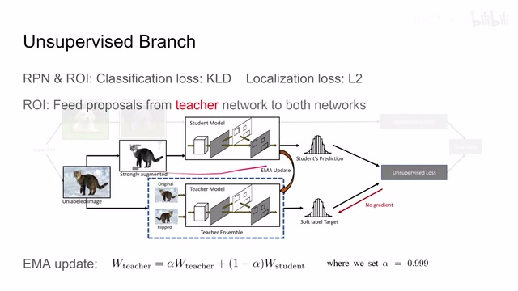
00:08:22–00:08:23 · 画面 01400:08:23–00:08:34 · 画面 015
00:08:23–00:08:34 · 画面 015其实呢，就是帮助我们在 tune 这个 teacher model，让它呢变得更加稳定，性能更好。那么同时呢，你可以看到，因为 teacher 呢是以动量的形式向着这个 student network 更新的。所以说呢，假如说即便是某一步这个 student network 它的这个样本训练的特别不好啊，导致整个这个性能骤降，也不会对我们最终的模型产生太多的影响。那么此外呢，还有一个细节，我们是把 strongly augmented 的这个 image 送到这个 student model。
00:08:34–00:09:24 · 画面 016
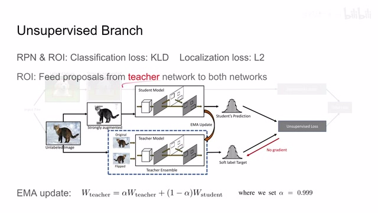
00:08:34–00:09:24 · 画面 016而对于 Teacher Model，它始终拿的是 Weakly Augmented 这样的设计，使我们 Teacher Model 始终能够产生质量很高的 Prediction。而我们 Student Model 就专注于让我们的 Generalization ability 变得更强，让它自己能够克服 Strongly Augmented 数据带来的困难。其实就非常像你的老板让你去踩各种各样的坑，我们就不摘开脚了。那么接下来我们再关注一下 Teacher Ensemble。
那么它的思想呢其实非常简单你可以看到呢这里呢我们把输入的图像原始图像给它水平翻转了一下这样子呢我们就得到了两份这个图像但是呢因为我们这个图像呢是水平翻转的所以呢你的这个 feature proposals 只要提取一次就可以了那么对另一张图像呢你只要把它们都水平翻转过来就可以了那么把这个翻转过的 feature 和 proposals 呢一起送到我们的这个 ROI 里面
00:09:24–00:10:04 · 画面 017
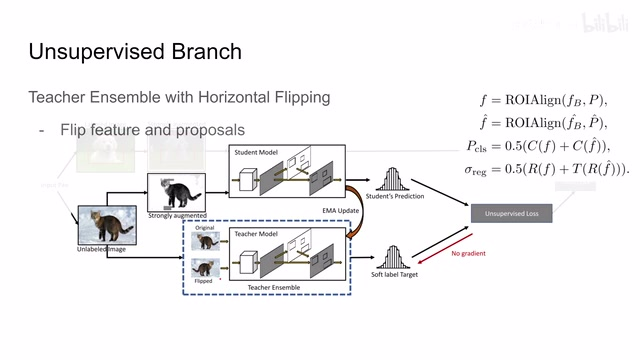
00:09:24–00:10:04 · 画面 017那这样子呢，ROI 有了双倍的快乐。而这个 featured proposals 呢没有进行额外的计算代价，是一个非常巧妙的 sample 的方法。那么你可以看到，最后预测的结果啊还有这个 bounding box 的区域呢就是一半一半啊，大家这个 ensemble 起来就可以了。那么以上呢就是这篇论文主要的技术框架。那么下面呢，我们就来看作者汇报的结果了。那既然是 object detection 嘛。
00:10:04–00:10:05 · 画面 018
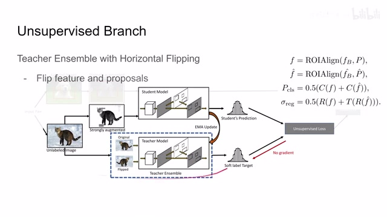
00:10:04–00:10:05 · 画面 01800:10:05–00:10:09 · 画面 019
00:10:05–00:10:09 · 画面 01900:10:09–00:10:16 · 画面 020
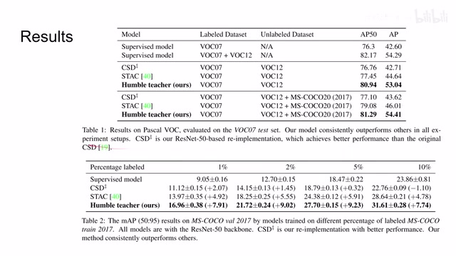
00:10:09–00:10:16 · 画面 020肯定是 pascal voc 还有 ms coco，具体的实验配置你可以看到这里。同时你看到这里测试了使用不同比例的有标记的样本会对性能产生的影响。其实后面我们更关注 ablation。首先第一个是 number of proposals，也就是说我们在训练 Azurewise 网络的时候，我们既然已经是确定了在 teacher 的 app 里面选出 proposal 给两个模型来用，而且我们的图像是没有 label 的，那么要选多少个 proposal 合适？
00:10:16–00:10:17 · 画面 021
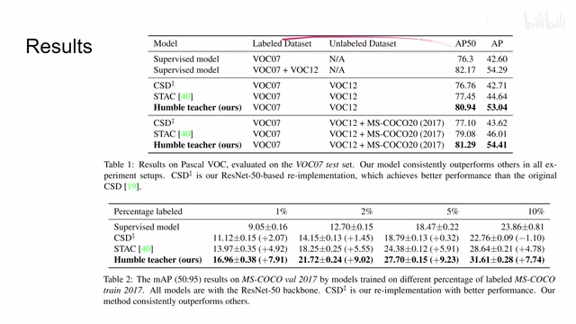
00:10:16–00:10:17 · 画面 02100:10:17–00:10:24 · 画面 022
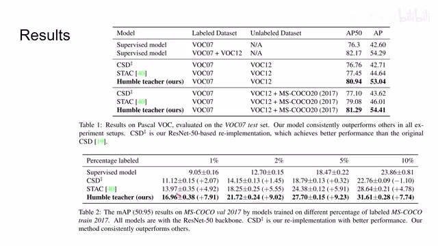
00:10:17–00:10:24 · 画面 02200:10:24–00:11:23 · 画面 023
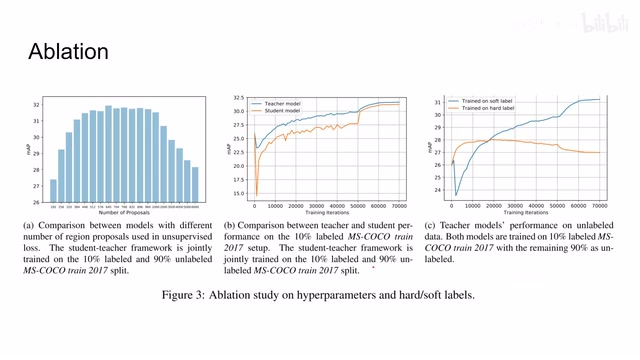
00:10:24–00:11:23 · 画面 023这里作者经过一系列实验来确定 640 个是一个比较合适的数量。那么这里的这个图呢就告诉我们，我们为什么要在 inference 的时候选择这个 teacher model。你可以看到呢，随着这个训练的进行，teacher model 的性能呢是一直高于我们的 student model。那这里呢，像我们展示的是这个 soft label 和 hard label，也就是说是我是用 KL divergence 让 student 的预测的 distribution 向这个 teacher 的靠拢，还是说直接用 teacher 的一个 label 然后呢塑这个 cross entropy。那么你可以看到呢，随着训练次数的增加呢。
我们 soft label 的性能逐渐超越了 hard label 的性能，这是一组非常有意思的实验。那么接下来作者还对比了 EMA 的时机，我什么时候从 student network 向 teacher network 更新信息。
00:11:23–00:11:50 · 画面 024
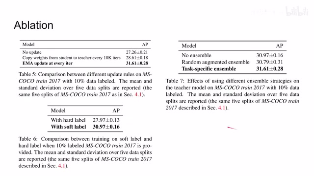
00:11:23–00:11:50 · 画面 024那可以看到呢，是每个 iteration 的就更新效果是最好的。那么这里呢，还有这个 soft pseudo-label 的问题，我们之前已经说过了。那这里呢，是这个 ensemble，也就是说为什么我们要这个水平翻转这个 teacher network 里面的 ensemble。那显然呢，就是给我们带来更好的性能好的。那么总结来看，从这篇文章中我们学到了什么呢。
00:11:50–00:12:43 · 画面 025
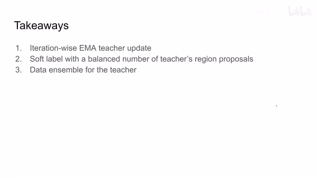
00:11:50–00:12:43 · 画面 025首先是这个 iteration-wise 的 EMA teacher update，也就是说，我在每一次训练 student network 之后，都向我们的 teacher 更新一下东西，这个 student 和 teacher 多交流，那么第二个就是这个 soft label 和 balance number of teachers region proposals，也就是 proposal 数量的选择，还有 soft label 的选择，这个设计可以帮助我们改善性能那么最后呢是这个 data ensemble，在实践中呢能够提升一定的性能。所以你看本文使用的技术呢都是我们已经非常熟知的技术，但是它非常巧妙的通过这样一个双网络的这样一个结构，特别是把我们这个 self-supervised 里面一些好的实践呢都拿到了这个网络当中，那取得了一个相对令人满意的结果。那么还是如果你对这篇论文感兴趣，非常推荐你去查看论文原人中的细节。
那么以上就是我对这篇论文的简单分析，感谢您的收看，再见。
00:12:43–00:12:43 · 画面 026
00:12:43–00:12:43 · 画面 026转写与来源说明 · 0 个自动复核提示
保留 32 个原始语音片段，0 个片段触发自动复核提示。提示仅用于定位可能的术语、重复或识别问题，不等于已确认错误。
讲解画面为源视频截图（640×360），不是可编辑 PPT 文件。全片按每秒 2 帧扫描内容变化，逐步展开页保留；连续动画保留代表画面。清晰度受源视频限制。
原视频：paper/合集_2026-10-16_表征学习/[论文简析]Humble Teachers Teach Better Students for Semi-Supervised Object Detection.mp4
SHA-256：4956a3a841d94c6f66a883aa668f24d7eda28037a6faeb6ddb5957670b134e0d
全文按视频语音与画面制作。原论文可从上方链接下载；完整资料包保留全文、原始逐字稿、字幕和校对记录。